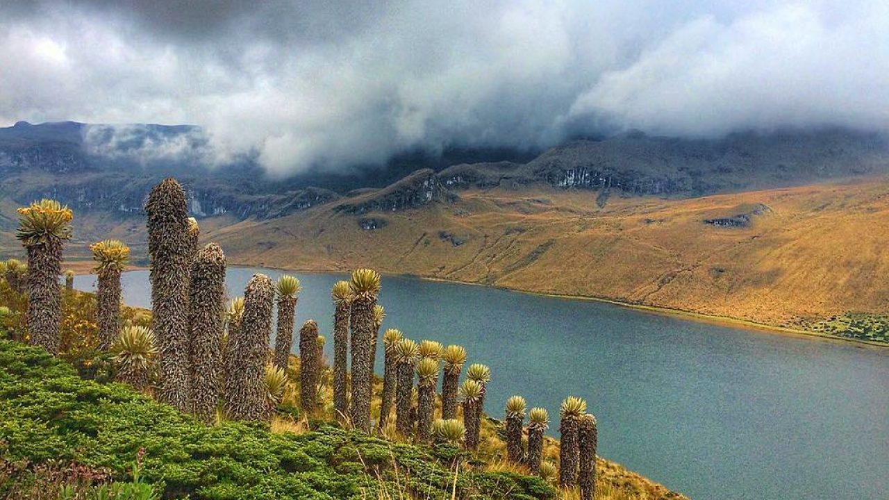

Pereira
Laguna del otun
Este cuerpo de agua se sitúa a 3.950 msnm en jurisdiccíon del departamento de Risaralda, en el Parque Nacional Los Nevados. la laguna está rodeada de un ecosistema de páramo y tiene una extension aproximada de 1.5 km2.